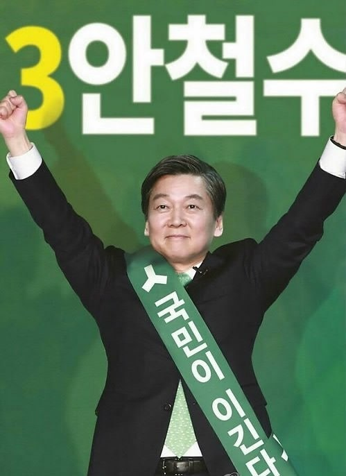

후보자 정보: 안철수 (제 19대 대통령 선거)

| 소속 정당 | 국민의당 |
|---|---|
| 생년월일 | 1962년 2월 26일 |
| 출신지 | 경상남도 밀양시 |
| 학력 | 서울대학교 의과대학 의학학사 서울대학교 대학원 의학석사 서울대학교 대학원 의학박사 |
| 주요 경력 |
안철수연구소(현 AhnLab) 설립자 및 CEO 서울대학교 융합과학기술대학원장 제19대 국회의원(서울 노원구 병) 새정치민주연합 공동대표 국민의당 제19대 대통령 선거 후보 |
주요 공약 및 정책
✔ 교육 개혁: 대입 제도 단순화, 교사 자율성 강화
✔ 일자리 정책: 청년 일자리 확대, 중소기업 지원 강화
✔ 정치 개혁: 중대선거구제 도입, 연동형 비례대표제 추진
✔ 복지 정책: 기본 복지 확대, 아동·청년·노인 맞춤 복지
✔ 미래 산업: 4차 산업혁명 대응, 혁신 창업 생태계 조성
✔ 일자리 정책: 청년 일자리 확대, 중소기업 지원 강화
✔ 정치 개혁: 중대선거구제 도입, 연동형 비례대표제 추진
✔ 복지 정책: 기본 복지 확대, 아동·청년·노인 맞춤 복지
✔ 미래 산업: 4차 산업혁명 대응, 혁신 창업 생태계 조성
비전과 슬로건
슬로건: "국민이 이깁니다"
핵심 가치: 공정, 혁신, 미래지향적 정치
핵심 가치: 공정, 혁신, 미래지향적 정치
논란 및 이슈
✔ 단일화 논의: 문재인 후보와의 단일화 무산
✔ TV 토론 태도: 토론 방식과 발언 내용 관련한 논란
✔ 공약 실현 가능성: 일부 공약의 구체성 부족 지적
✔ 중도 이미지 강조: 보수와 진보 사이의 모호한 입장 논란
✔ TV 토론 태도: 토론 방식과 발언 내용 관련한 논란
✔ 공약 실현 가능성: 일부 공약의 구체성 부족 지적
✔ 중도 이미지 강조: 보수와 진보 사이의 모호한 입장 논란